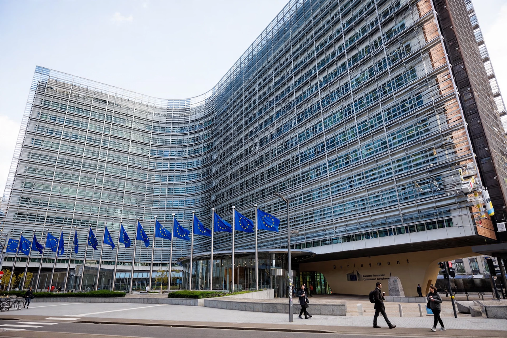

The European Commission is the executive branch of the European Union, responsible for proposing legislation, implementing decisions, upholding treaties and managing day-to-day business. It consists of a College of Commissioners, one per member state, led by its president.
The Commission holds the near-exclusive right of legislative initiative, acts as guardian of the treaties (bringing cases before the Court of Justice), manages the EU budget, and represents the EU in trade negotiations. Its staff of roughly 32,000 works in directorates-general.
It descends from the High Authority of the European Coal and Steel Community (1952) and the commissions merged in 1967.